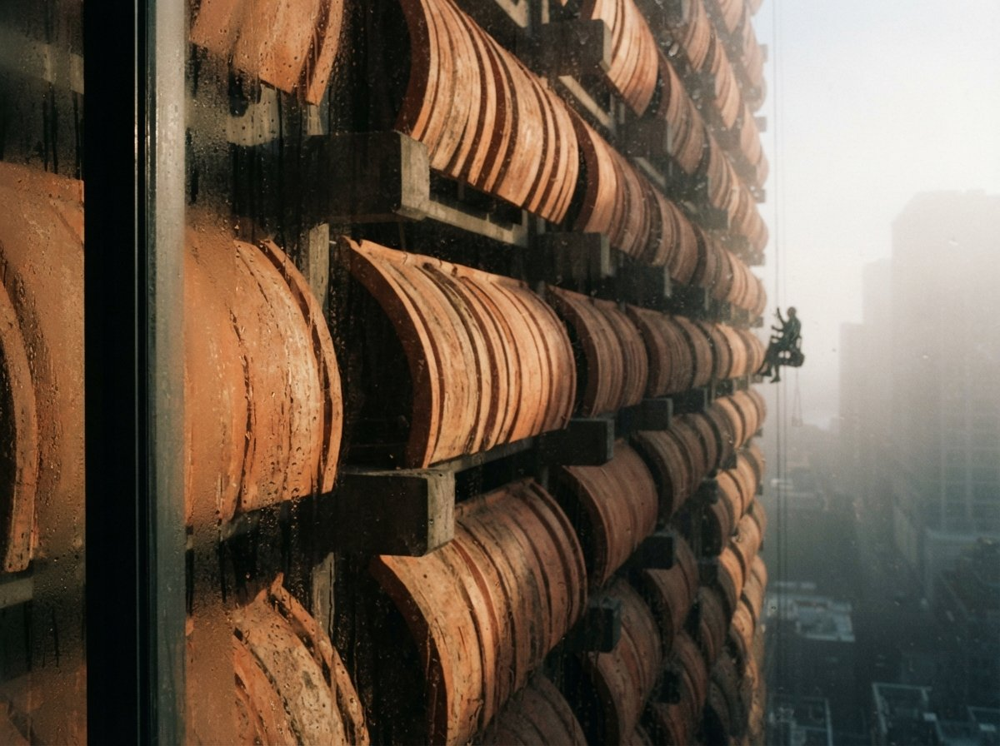
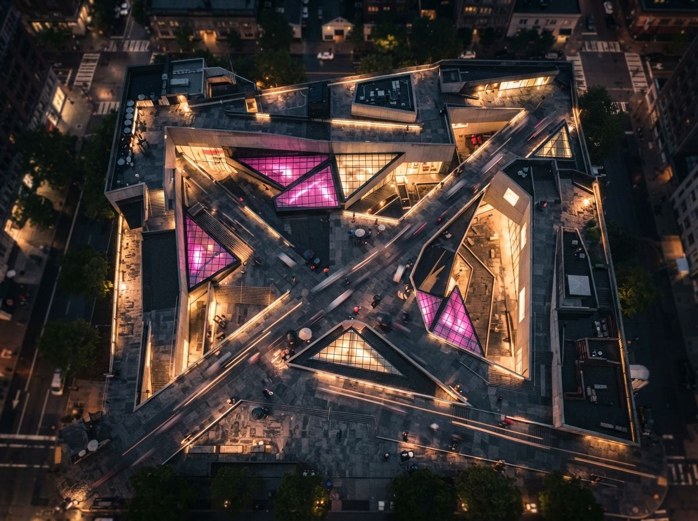

The thread was in r/comfyui, titled plainly enough: AI archviz with ComfyUI, SDXL plus FLUX. The poster had a working pipeline and a specific complaint. Crank the settings toward fidelity and the render barely moves off the base image, safe but pointless. Crank them toward style and the render stops being the building, walls shift, a window that was not there appears, the roofline reads differently from three different angles. Their own description of what they wanted was exact: a way in between, enough control to keep the geometry, enough randomness that the model is doing something rather than nothing.
That in-between point has a name, and it is not a vibe you find by eye. It is denoise strength, paired with ControlNet conditioning weight, and the two work against each other on purpose.

What the sliders are actually doing
Denoise strength governs how much of the original image the sampler is allowed to throw away and repaint. At 0, nothing changes, you get the input back. At 1, the input is barely a starting point, a rough shape the model can override entirely. Everything between those ends is a spectrum of how much license the model has to disagree with what you gave it. Material and lighting passes want the low end of that spectrum. Anything asking the model to invent geometry needs the high end, and the high end is where buildings start moving.
ControlNet conditioning weight is the counterweight. A depth or canny map extracted from your render tells the model where the edges, planes and openings actually are, and the weight controls how hard that map fights back against the denoise strength's permission to improvise. A high weight holds the line count firm even at aggressive denoise. A low weight lets the sampler treat the control map as a suggestion, which is exactly how a request for "enhance my render" quietly becomes a request to redesign it.
The Reddit poster's instinct was correct: these two numbers are not independent settings to tune separately, they are one negotiation. Denoise strength asks for freedom. ControlNet weight decides how much of that freedom the geometry is allowed to spend. A workflow that only exposes one of them, which most public workflows do, is handing you half a steering wheel.
Numbers that hold up in practice
Vendor tutorials rarely publish ranges because a range depends on the base model, the sampler and the specific control map, so treat the following as a starting point to test against your own pipeline, not a universal constant. The direction of each number matters more than its third decimal.
| What you're trying to do | Denoise strength | ControlNet weight | What you get |
|---|---|---|---|
| Material and lighting pass only | 0.15 to 0.30 | 0.9 to 1.0 | Geometry essentially locked, sky, materials and shadow direction shift |
| Add atmosphere, entourage, weather | 0.35 to 0.50 | 0.6 to 0.8 | Trees, cars and people appear, walls and window count hold |
| Full style pass, massing must survive | 0.50 to 0.65 | 0.8 to 1.0 (canny) | Large visual shift, edges still policed hard |
| Early massing exploration, nothing final | 0.70 to 0.90 | 0.3 to 0.5 or none | Model redesigns freely, useful for ideation, wrong for anything client-facing |
Read the bottom row again, because it is the one that causes the complaints. A workflow copied from a tutorial video, screenshots and all, was very likely tuned for that last row, concept exploration, where a redesigned window is a feature, not a defect. Drop that same workflow onto a schematic-design elevation that has to survive a client review, and the tool has not gotten worse. It was never built for the job you just gave it.
Why the tutorials skip this part
A workflow screenshot shows one input, one output and a set of numbers that produced that specific pairing. It does not show the twelve failed attempts at other numbers, and it rarely explains that the chosen denoise strength was picked for a hero shot where architectural accuracy was never the point. Copy the graph, swap in your own building, and the settings that flattered someone else's concept render will happily rewrite yours. We have made a related argument before about where in the pipeline a workflow locks geometry, first pass versus enhance pass. Denoise strength is the other half of that same argument: not just which pass touches the geometry, but how much room that pass has to move it.
A workflow that only exposes denoise strength is asking you to trust it. One that exposes ControlNet weight next to it is asking you to check its work.

The one-render test
Before trusting a workflow on anything a client will see, run it once with a stripped-down check. Take your base render, note the window count on the front elevation, note whether the roof is flat, pitched or something else, then run the workflow and count again on the output. If the count matches at your chosen denoise strength, the setting is safe for that use case. If it does not, the model is spending more freedom than you meant to give it, and the fix is almost always to lower denoise strength before touching anything else. This is the same discipline behind the geometry hallucination checklist we published earlier, applied one slider upstream of the QA pass rather than after it. Catching a redesigned window at the settings stage costs one test render. Catching it after the client has seen the image costs the client's trust in every render after it.
Run that same test at three denoise values on one seed before you commit a workflow to production work, 0.3, 0.5 and 0.7 is a reasonable spread. The differences will tell you more about where your specific model and control map start to drift than any published range, including the one above.
Our take
The interesting part of the Reddit thread was not the technical question, ComfyUI users ask about denoise strength constantly. It was that the poster framed it correctly on the first attempt: control and creativity are not opposites to balance by feel, they are two named parameters with a specific relationship, and the relationship is knowable. Most of the frustration people report with AI archviz tools traces back to exactly this, a slider left at whatever value a tutorial happened to use, applied to a job the tutorial was never testing for.
Denoise strength deserves the same respect people already give ControlNet weight. It is usually the one left on default, because the workflow's original screenshot never needed to reproduce anywhere near geometric fidelity, and nobody thought to mention that before sharing it.
Sourced from a ComfyUI archviz workflow thread (r/comfyui, SDXL plus FLUX) in the 8 August 2026 intel sweep, plus published ComfyUI and ControlNet parameter documentation. Numeric ranges are a practitioner starting point for testing against your own base model and control map, not a guaranteed setting.